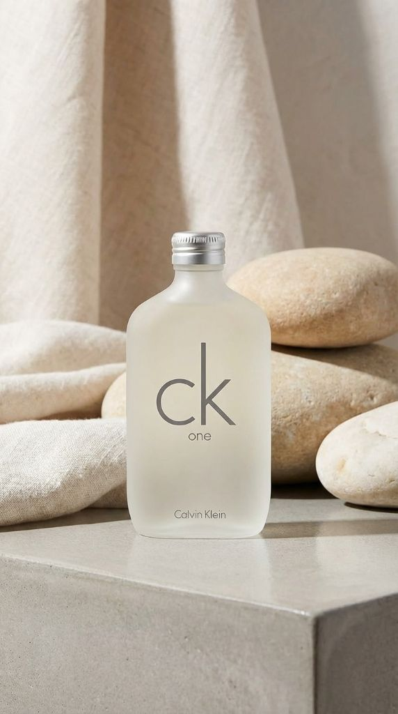

「香水」と聞いて、多くの人が真っ先に思い浮かべるアイコニックなボトル。1994年の発売以来、世界中で愛され続けているCalvin Klein（カルバンクライン）の「CK-ONE（シーケーワン）」。
90年代のブームを知る世代には懐かしく、Z世代には「レトロで新しい」と感じられるこの香水。なぜ30年経った今でも、これほどまでに支持されているのでしょうか？今回は、ジェンダーレス香水の原点とも言えるCK-ONEの魅力を徹底解剖します。
シンプルを極めたフロストガラスのボトルは、今見ても洗練されています。
1. 世界を変えた「シェアする香り」のコンセプト
CK-ONEが登場する前、香水は「男性用」「女性用」とはっきり分かれているのが常識でした。そんな中、「ONE for all（すべての人のために）」というメッセージと共に現れたのがCK-ONEです。
性別も、年齢も、国籍も関係ない。恋人と、友人と、家族とシェアできる香り。この「ジェンダーレス（ユニセックス）」という概念は、当時の社会に大きな衝撃を与え、現代の多様性を尊重する時代の先駆けとなりました。
2. 香りの構成：究極のシトラス・グリーン
CK-ONEの香りは、一言で言えば「クリーンで親しみやすい」。誰からも好かれる爽やかさが最大の特徴です。
ベルガモット / レモン / パパイヤ
グリーンティー / ジャスミン / ヘディオン
ムスク / アンバー / サンダルウッド
香りの持続時間：約 3 - 4 時間（オードトワレ）
香りの詳細
トップノート
シトラスアロマティック
つけた瞬間、ベルガモットとレモンの弾けるような酸味が広がります。パパイヤやパイナップルの隠し味が、単なる柑橘系ではない深みを与えています。
つけた瞬間、ベルガモットとレモンの弾けるような酸味が広がります。パパイヤやパイナップルの隠し味が、単なる柑橘系ではない深みを与えています。
ミドルノート
グリーンティー
CK-ONEを象徴する「グリーンティー（緑茶）」の香りが、心を落ち着かせる清潔感を演出。ジャスミンの透明感あるフローラルが優しく寄り添います。
CK-ONEを象徴する「グリーンティー（緑茶）」の香りが、心を落ち着かせる清潔感を演出。ジャスミンの透明感あるフローラルが優しく寄り添います。
ラストノート
センシュアルムスク
最後は肌に馴染むようなムスクとアンバーが残り、清潔感の中にもほんのりとした色気を感じさせます。
最後は肌に馴染むようなムスクとアンバーが残り、清潔感の中にもほんのりとした色気を感じさせます。
3. 今こそ「CK-ONE」を選ぶべき理由
ニッチな高級香水が流行する今、あえてCK-ONEを選ぶメリットは何でしょうか？
- 圧倒的な「好感度」：オフィス、学校、ジムの帰り。どんなシーンでも「いい匂い」と思われる清潔感は、他の追随を許しません。
- TPOを選ばない軽やかさ：オードトワレなので香りが強すぎず、香水初心者でも失敗しません。リフレッシュしたい時のルームスプレーとしても優秀です。
- 驚きのコストパフォーマンス：名香でありながら、手に取りやすい価格設定。100ml以上の大容量ボトルなら、気兼ねなく毎日使えます。
まとめ
CK-ONEは、単なる「流行った香水」ではありません。30年経っても古びない、完成された「普遍的な清潔感」の象徴です。
「香水をつけてみたいけど、何を選べばいいかわからない」「パートナーと一緒に使える香りが欲しい」そんな方に、自信を持っておすすめできる永遠のスタンダードです。